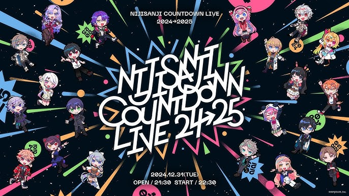

にじさんじについて
にじさんじ（英: NIJISANJI, Nijisanji）は、ANYCOLOR株式会社が運営する、バーチャルライバー（VTuber）グループです。デビュー当初、キズナアイなどの3Dモデル・動画主体のバーチャルYouTuberが多かった中で、2Dモデル・生放送主体のスタイルはその後のバーチャルYouTuberに大きな影響を与えた。


にじさんじ（英: NIJISANJI, Nijisanji）は、ANYCOLOR株式会社が運営する、バーチャルライバー（VTuber）グループです。デビュー当初、キズナアイなどの3Dモデル・動画主体のバーチャルYouTuberが多かった中で、2Dモデル・生放送主体のスタイルはその後のバーチャルYouTuberに大きな影響を与えた。
